Tutorial for the ygt hint editor
This tutorial assumes that you understand what TrueType hinting is and what
it is for. It also assumes that you have succeeded
in downloading and launching ygt. If the first of these
things is not true, read the
introduction
to TrueType hinting at the Microsoft Typography site. If the second is not
true, consult the “Getting Started” section of the document
YGT-Intro.pdf.
The ygt window
Start a hinting project by launching ygt and opening either a TrueType
font or a UFO. For this tutorial we’ll open the variable version of
the Elstob font
(the very font in which this document is set), which will enable us to demonstrate both basic
hinting techniques and advanced techniques relating to variable fonts.
When you first load a font, the ygt main window looks like this:
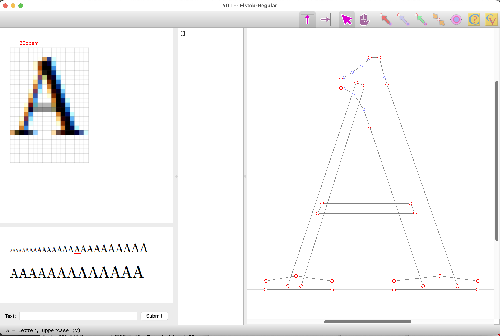
This window is divided into five panes. On the right is the graphical
editor, where you will do most of your work. In the middle is the code
pane. ygt stores hints and other data in files in the YAML
serialization language, and the code pane displays this YAML code. You
can edit the code directly, though most of the time it will be faster
and easier to use the graphical editor.*
*You can
find a reference for ygt’s very simple hinting language in the
document YGT-Intro.pdf.
On the left are two preview
panes. The one on the top shows a blown-up version of the current
glyph as it will be rendered on screen, with the current collection of
hints applied. You can view this glyph at various resolutions (in
pixels per inch) and in various rendering modes, and you can view it
in black-on-white or white-on-black. If you are hinting a variable
font, you can preview any instance. All of these choices can be made
from the “Preview” menu.
Beneath the big preview pane is one that by default shows the current
glyph in an array of resolutions beginning with 10ppem:
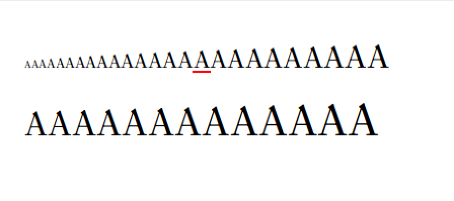
The current resolution (25ppem is the default) is underlined in red;
click on any instance to display that resolution in the large pane
above. If you want to see a glyph in context, type something (perhaps
a favorite pangram) into the “Text” box and hit the Enter key or click
“Submit”: the text will appear in the current resolution and in the
current instance:
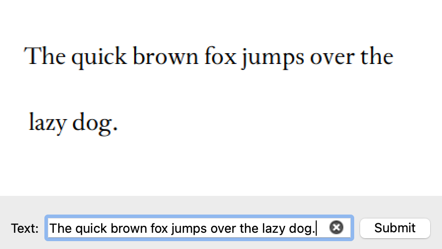
By choosing options on the “Preview” menu, you can choose the script
and language for this text, and you can apply any of your font’s OpenType
features—for example, small caps:
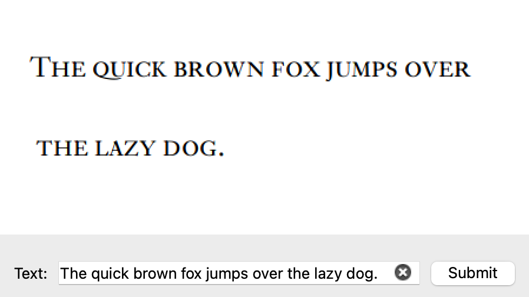
The ability to apply scripts, languages, and features enables you
to get a preview of any glyph in context.
At the top of the ygt window is a row of buttons. Some of these are
for adding hints (more on these later), while others are for managing CVs, changing the
behavior of the pointer, and choosing the hinting direction (though
modern fonts are usually hinted only on the y axis).
There are two more important windows to mention before we go on.
One is the “Font Viewer,” which displays all the glyphs of the font:

You can filter the display by typing any part of a glyph name. For
example, typing “eight” in the “Filter” box causes the Font Viewer
to display all variants of the number eight:
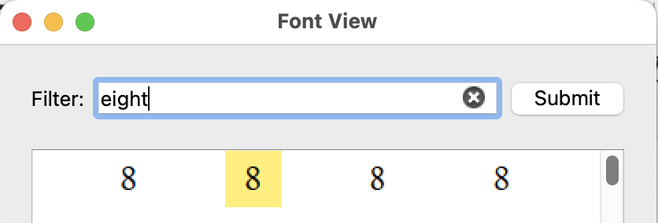
Glyphs that are already hinted are highlighted in blue; composite
glyphs (which can’t be edited in ygt) are highlighted in gold. The
current glyph is outlined in red.
Go to any glyph by clicking on it in the Font Viewer.
Next is the “Font Info” window:
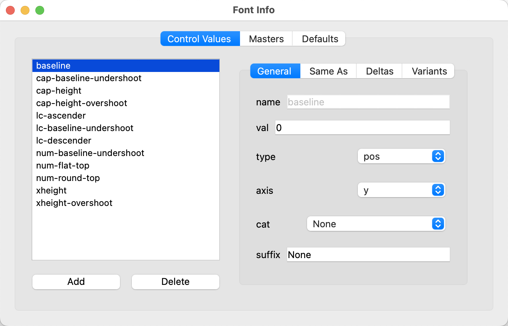
This allows you to manage all of the font’s control values (CVs),*
*A control value is an integer stored in
an array in the font. It is used by anchor and stem hints to
position points on the grid and regulate distances.
which in ygt
are named rather than numbered. Here you can also manage the masters
of variable fonts, which correspond to the masters you produced when
designing the font, and the variant CVs associated with those
masters. We’ll have much more to say about managing CVs later on in
this tutorial.
You can also manage defaults for the current font on the
“Defaults” tab of the Font Info window.
Setting up for hinting
Before we start to hint this font, we should customize the workspace. By
default, the graphical editor shows all of a glyph’s points: on-curve
points are red circles, and off-curve points are slightly smaller blue
circles. It is quite possible to apply hints to off-curve points, but
I strongly suggest that you hint only on-curve points. If you decide to follow
this advice, you can suppress the display of off-curve points by
right-clicking anywhere in the graphical editor and selecting “Hide
off-curve points” from the context menu.
It normally isn’t necessary to display point labels while editing,
but if you want them for any reason, select “Show point labels” from
the context menu:
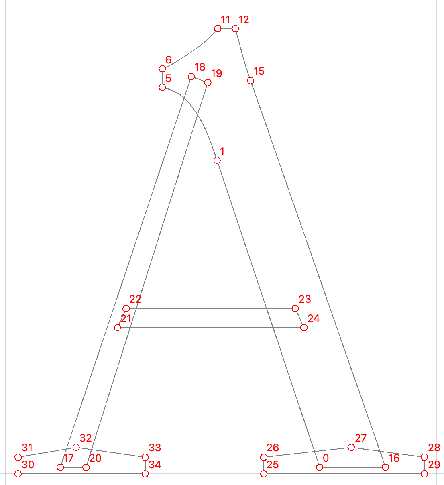
In a TrueType font, glyph outlines are defined by a zero-based array
of points. Most TrueType hint editors require that you refer to points
using indexes into this array. Unfortunately, these point numbers are
unstable. If you switch font editors, the new editor will probably
number points differently. If you make even minor edits in a glyph,
you will very likely cause the glyph’s points to be renumbered. If
you do either of these things after you’ve begun hinting, the result will be chaos.
One way around this problem is to display point labels as coordinates
rather than indexes. Select “On-curve labels as coordinates” from the
context menu to switch to this mode:
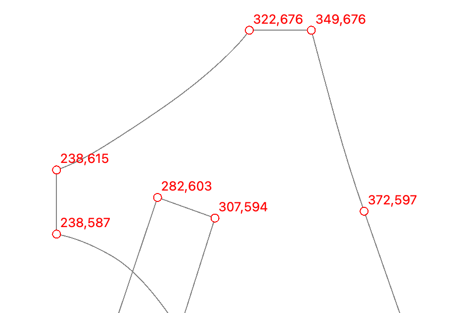
Now the code generated by ygt will refer to points by their
coordinates rather than their indexes, and ygt will translate these
coordinates into indexes at compile time. Since font apps will not
move on-curve points even if you add points, move off-curve
points, or change editors, coordinates can be more stable than
indexes. If you switch the display from indexes to coordinates and
then hide point labels, coordinates will still be inserted in your
code.
Neither coordinates nor indexes are particularly mnemonic, but you
can name points if you like. If you name just a few key points, they
will make it easy to spot the sections of your code dealing with the
various features of a glyph.
To name a point, select* *To select a point, click
or drag over it. Selected points are filled with gray.
it, right click in the graphical editor, and
select “Name selected point” from the context menu. Type a name in
the dialog that appears. The name will show in the graphical editor:
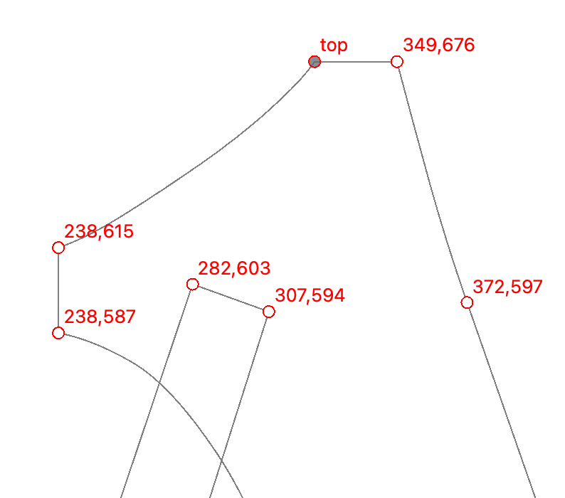
If you name a point while point labels are displayed as indexes,
the name will serve as an alias for an index; otherwise it will serve
as an alias for a coordinate-pair.
ygt does a good bit of setup for you the first time you open a
font. It analyzes the font and builds a short list of CVs,
each of which is accompanied by a good bit of information, as you can see
in the entry for “xheight”:
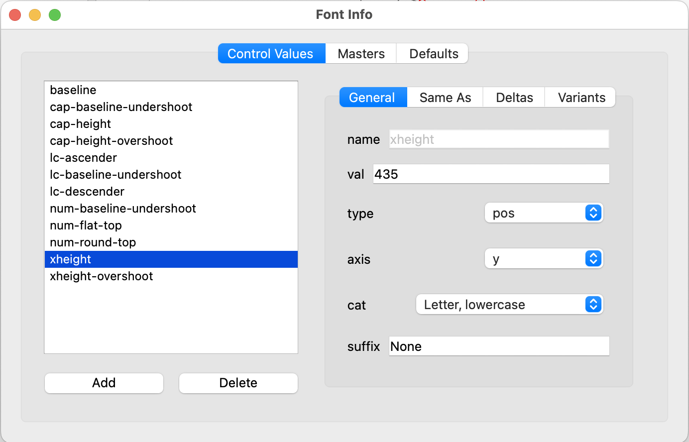
- name
-
ygt names CVs rather than requiring that you memorize their indexes.
You supply a name when you create a CV, but the name can’t be changed
afterwards—except by editing the code.
- val
-
A number in font units. For CVs of this type (see next item), this
value is an absolute position on the current axis.
- type
-
This can be “pos” (for “position”) or “dist” (for distance). A “pos”
CV is an absolute position of a point on the grid, while a “dist” CV
is the distance between two points.
- axis
-
This can be “x” or “y.” Hinting for most fonts is now done only on the y axis.
- cat
-
The category of character that this CV applies to.*Unencoded
glyphs have no Unicode category, but ygt can
usually guess at one.
All of the encoded glyphs in
a font belong to a Unicode category (e.g. “Letter, uppercase” or “Symbol,
currency”).* Selecting a category here signals that this CV applies only to
characters in that category.
- suffix
-
Some classes of characters do not correspond to the Unicode categories,
but can be identified by suffixes (like .sc or
.smcp for small caps). If
you enter a value here, this CV will apply only to characters with the
specified suffix.
A CV can be made equal to another CV at specified sizes. For an example,
select “xheight-overshoot” in the list of CVs and click over to the “Same as” tab:
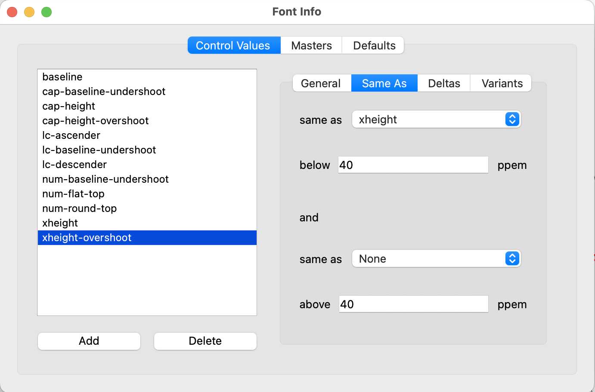
Here the CV “xheight-overshoot” is made equal to the “xheight” CV when
the current resolution is less than 40ppem. (The same can be done when
the current resolution is above a certain value, but this will be
rarer.) The normal use of this feature is to equalize approximately
equal CVs at low resolutions, so that, for example, characters with
overshoot (like o) don’t appear too much higher or lower than characters
without overshoot (like x). In this example (at 18ppem), the top line
does not set the two CVs equal and the bottom line does:
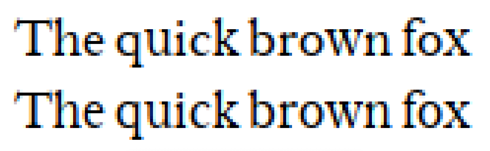
By default, the two CVs specified here are set equal below 40ppem, but
you should experiment with this threshold number to get the best result for each
pair of CVs.
The first time you open a variable font, ygt builds a list of masters.
These will usually match the masters you created when designing the font,
but you can add to, subtract from, and edit this list:
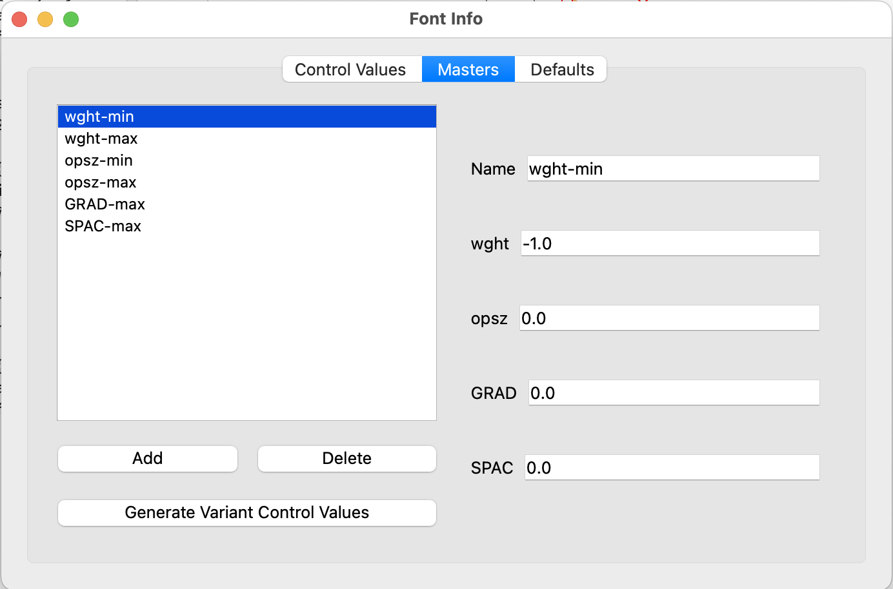
It is beyond the scope of this tutorial to explain the numbers that
define each master, but you need
to know that each master can have variant CVs associated
with it. Notice also the “Generate Variant
Control Values” button: we will return later to the subject of variant
CVs and of this button.
You can see the variant CVs associated with a variable font’s masters on the “Variants” pane of the
“Control Values” tab:
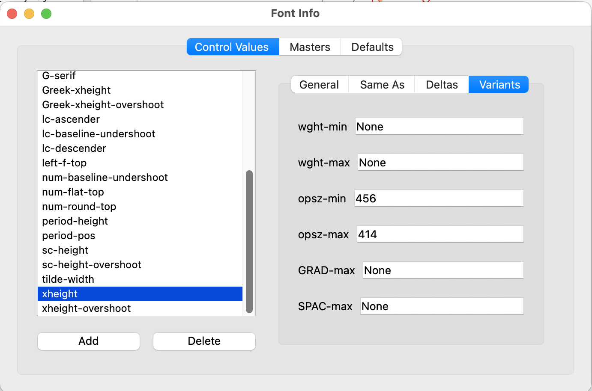
The default value of the “xheight” CV is 435, and it is the same for
all the masters for which the value is “None.” But the masters
“opsz-min” and “opsz-max” (for “Minimum Optical Size” and “Maximum
Optical Size”) have different values for this CV, which rendering
engines will interpolate whenever the Optical Size changes.
We will discuss the “Deltas” pane in another tutorial.
Hinting the letter A
The operation of the graphical editor will be intuitive to anyone who
has used a font or vector editor. To add a hint, select one or more points and
click one of these buttons (or use a shortcut key):
-
 Stem hint (shortcut T). This type of hint regulates the distance
between a reference and a target point. By default, the distance is
rounded: if the reference point is aligned to the grid, the target
point will also be aligned to the grid. Also by default, a minimum
distance of one pixel is maintained between the reference and the
target point. This can be turned off; or a distance of less or more
than one pixel can be specified in the code. For precise control,
a stem hint can use a CV; but this is not usually necessary in
modern hinting.
Stem hint (shortcut T). This type of hint regulates the distance
between a reference and a target point. By default, the distance is
rounded: if the reference point is aligned to the grid, the target
point will also be aligned to the grid. Also by default, a minimum
distance of one pixel is maintained between the reference and the
target point. This can be turned off; or a distance of less or more
than one pixel can be specified in the code. For precise control,
a stem hint can use a CV; but this is not usually necessary in
modern hinting.
-
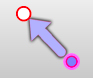
Shift hint (H). This moves one or more target points by exactly as
much as a reference point has been moved. If rounding is on for this
hint, all target points will then (after initial positioning) be
rounded to the grid.
-
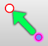
Align hint (L). This moves one or more target points so that they are
aligned on the current axis with a reference point. If rounding is on
for this hint, all target points will then be aligned to the grid. Align
hints are generally less useful than the others.
-
 Interpolate hint (I). This moves one or more target points so that their
position relative to two reference points is proportionally the same as
in the original glyph. As with the shift and align hints, rounding (if requested) is
done after the target points are moved.
Interpolate hint (I). This moves one or more target points so that their
position relative to two reference points is proportionally the same as
in the original glyph. As with the shift and align hints, rounding (if requested) is
done after the target points are moved.
-
 Anchor hint (A). This moves a point to a specific position on the grid.
The position may be specified with a CV; if not, the point’s destination
is its current position. By default, the point’s position is rounded so
that it will always land on a grid line. If neither a CV nor rounding is
applied, the point is merely “touched”—that is, marked as having been
affected by a hint. Being touched protects the point from being inadvertently
moved by later instructions.
Anchor hint (A). This moves a point to a specific position on the grid.
The position may be specified with a CV; if not, the point’s destination
is its current position. By default, the point’s position is rounded so
that it will always land on a grid line. If neither a CV nor rounding is
applied, the point is merely “touched”—that is, marked as having been
affected by a hint. Being touched protects the point from being inadvertently
moved by later instructions.
Let’s start hinting at the bottom of the glyph.*If a point
is both rounded and selected, the fill is dark pink (or a pink-tinted gray).
You must always begin a
sequence of hints with an anchor hint. Select the bottom-left point
(which we named “bottom” earlier) by clicking on it or dragging over
it, and click the “Anchor hint” button or type A. The point will be
highlighted in pink and filled with a lighter pink. The pink
highlighting tells us that an anchor hint has been applied to this
point, and the light pink fill tells us that the hint is rounded.*
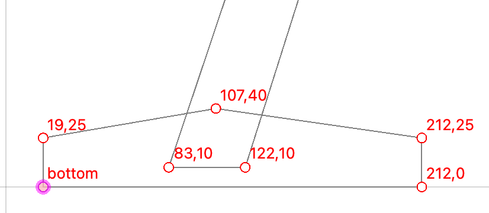
We should apply a CV to this hint: it is not strictly necessary here,
but it’s a good idea to use CVs for hints that position points at
specific places on the grid, if only for the sake of your code’s
legibility. Right click on the “bottom” point, select “Set control
value” from the context menu, and choose “baseline” from the list of
CVs (only CVs that can be applied to this hint in this glyph appear
on the menu):
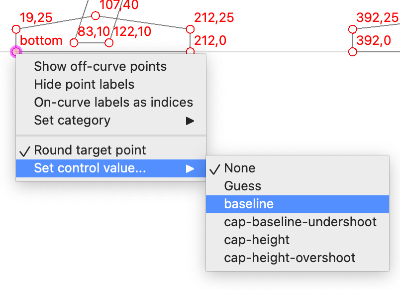
In the code pane, these lines have appeared. Together they make up a
hint instruction:
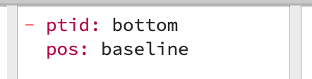
Those who know the YAML language will recognize the hyphen as marking
this instruction as a list item (a glyph program is a list of top-level
hints with their dependent hints): it consists of two key-value
pairs. “ptid” stands for “point identifier”: it can be a single point
or a list of points. “pos” stands for “position”: it identifies its
value as a position-type CV. If the point were not already positioned
on the baseline (if, for example, another instruction caused it to be
nudged away), the “baseline” CV would cause it to be moved there.
Most hint instructions in the code pane will also contain a “rel” key,
which specifies how the target point or points are to be positioned
relative to the reference point or points. Since an anchor hint is not
positioned relative to any other point, the “rel” key is omitted here.
Next we should regulate the thickness of the serif.*A
highlighted point like this one can’t
be selected by clicking on it: that selects the hint that has been
applied to it. Instead, drag over the point to select it.
In the days of
CRT displays, we
used a rounded stem hint with CV for this, but when working
on a font for a modern display, it is better to use an
unrounded stem hint without a CV. To do this, select the “bottom”
point* and point 19,25,
and click the “Stem hint” button or type the
shortcut T:
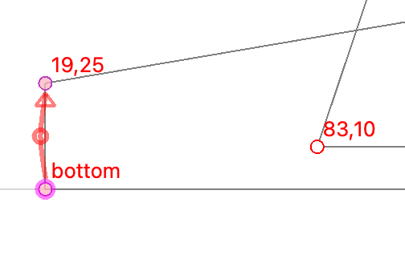
The stem hint is marked with a red arrow running from the reference
point “bottom” to the point at coordinates 19,25. You can see from the
pink fill for point 19,25 that this hint is rounded: to unround it,
right-click on the hint (the button in the middle of the arrow’s stem
provides a convenient thing to click on). On the context menu, you
will see that the item “Round target point” is checked: select this to
unround it.
The hints we have applied so far make little visible difference to the
rendered glyph—at least not at 25ppem. If you look closely, you can see
that the left serif has become a little darker:
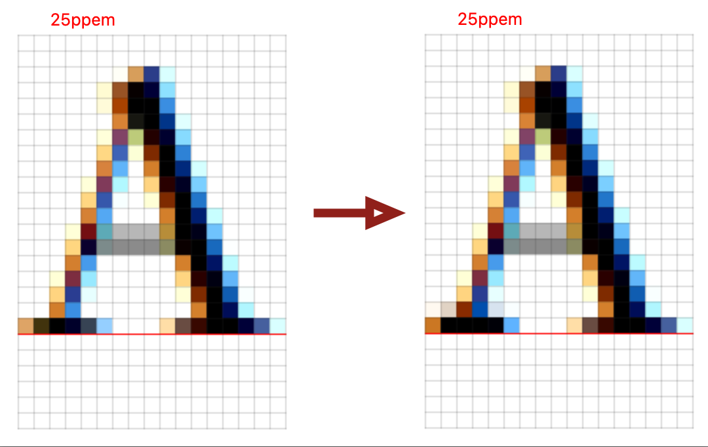
The hinting will make a bigger difference at other resolutions. We need
to hint the right-hand serif to match the one on the left. We could apply
the same hints we used for the left-hand serif to the one on the right,
but it is better to use shift hints here. Select a hinted point
on the left and an equivalent point on the right and click the shift-hint
button or type the shortcut H. Do this for each of the hinted points:

Now let’s hint the top of the letter. For the “top” point we’ll need
an anchor hint with CV. It is not necessary to add the hint and the CV
with separate operations; instead, hold down the Control or Command
key while adding the hint to make ygt guess at the correct CV by
choosing the CV with a position closest to that of the target
point. (You can make ygt guess at a CV for an existing hint by
clicking the “Guess Control Value” button (yellow with a question mark
in a C), by typing a question mark as a shortcut key, or by selecting
“Guess” from the list of CVs on the context menu.)
With a single action, we have anchored the point “top” and applied the
“cap-height-overshoot” CV (since the A is a little higher than most other
capitals). We should also regulate the position of the left-hand diagonal
relative to the “top” point. To do this, connect “top” with one of the
points at the top of the diagonal with a shift-hint:
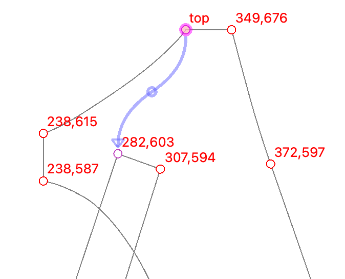
But our hinting of the top of the A has caused a problem at the bottom,
where (at certain resolutions) the ends of the diagonals have been pushed
out beyond the bottom of the letter:
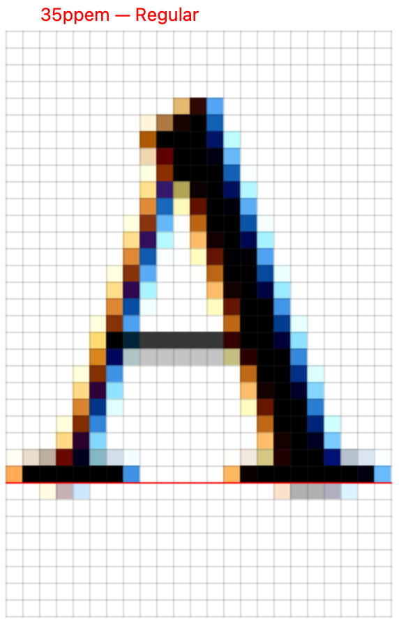
To fix this, we need to regulate the bottoms of the diagonals. There is
more than one way to do this; I suggest using an interpolate-hint to force
the relevant points back to their original mid-serif positions. Select the
two points we hinted in the bottom-left serifs, then one point at the bottom
of each diagonal; then click the “Interpolate-hint” button or type I:
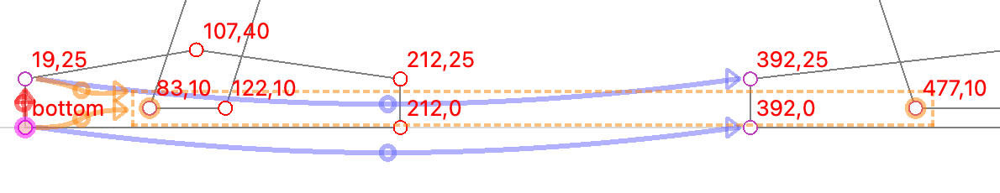
It’s getting a little crowded at the bottom of the glyph, but you can
see that yellow arrows now run from the two points we hinted at the
beginning of this process to a box containing two points highlighted
in yellow. The box identifies the two points as a set: the
interpolate-hint operates on all the members of this set. Now the
problem with the diagonals is fixed:
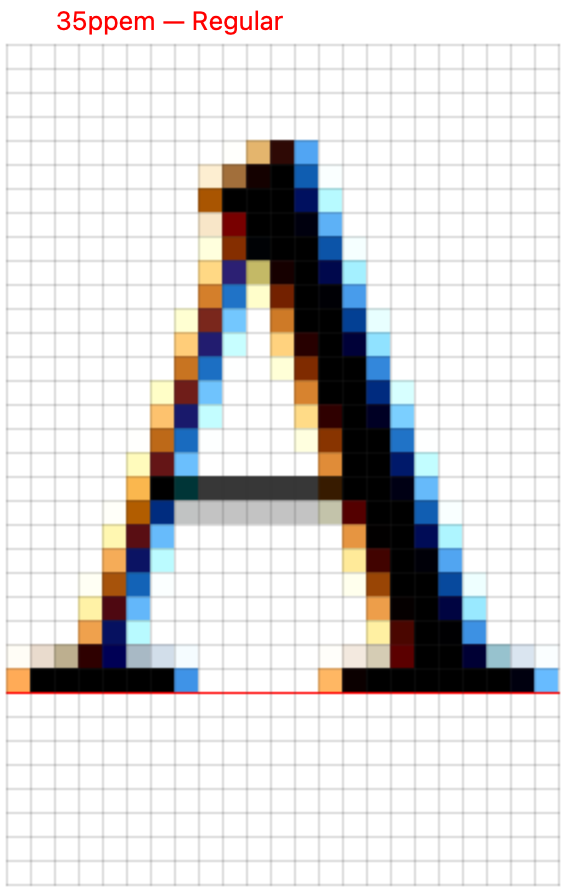
We still need to hint the bar of the A. Select the “top” and “bottom”
points, then the “bar” point, and hold down the shift key while clicking
the “interpolate-hint” button or typing I: the “bar” point (the bottom-left
point in the bar) will be interpolated and rounded to the grid:
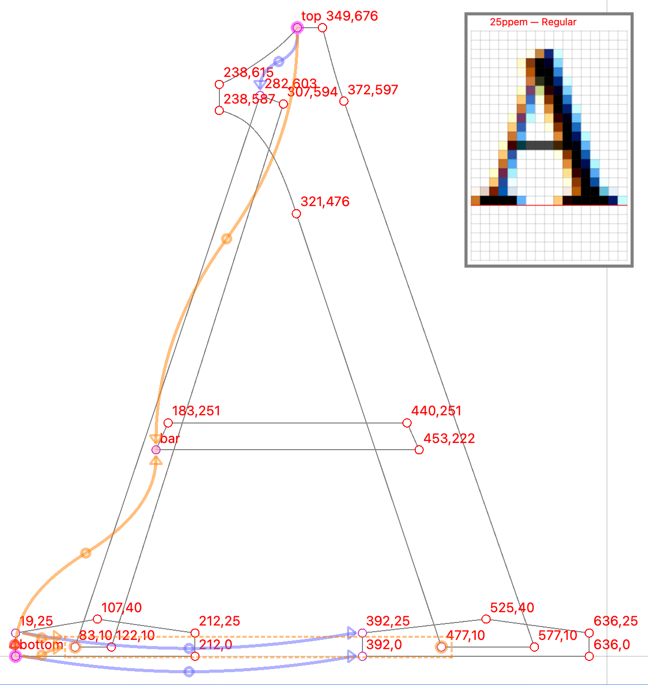
The last thing we need to do is regulate the top of the bar. We’ll need an
unrounded stem hint with no CV—the kind we used for the serif. In fact, almost all the stems in this font
will be regulated in the same way, with unrounded hints. So rather than
unrounding every stem hint after we add it, lets change the default behavior
of these stems. To do this, bring up the “Font Info” box and click over to
the “Rounding” pane of the “Defaults” tab:
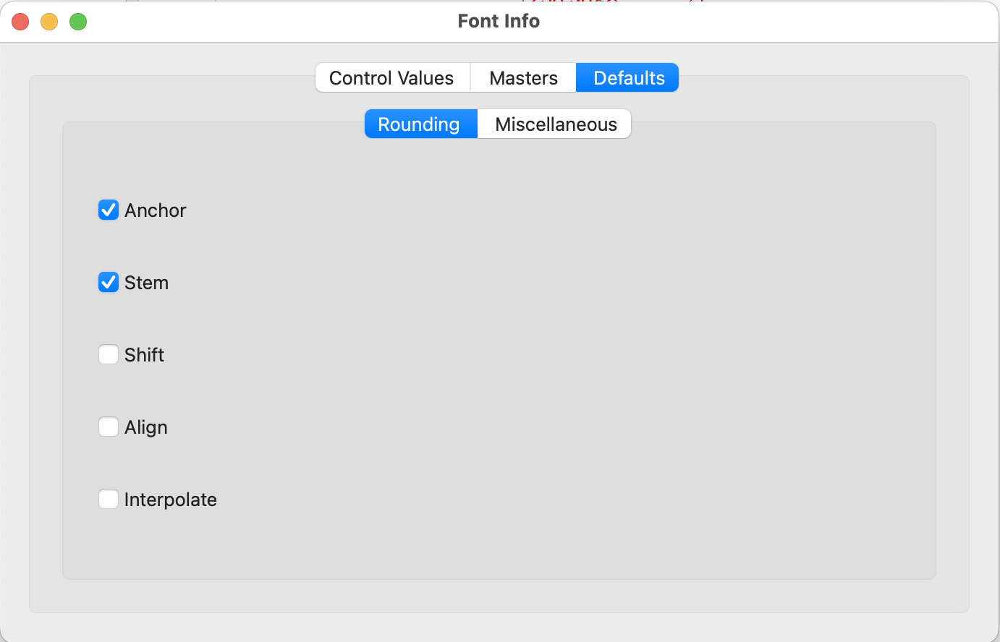
Uncheck the “Stem” box to make sure that every stem hint is unrounded when
first added (you can always change a hint’s rounding later). Now return
to the graphical editor and add a stem hint from “bar” to point
183,251:
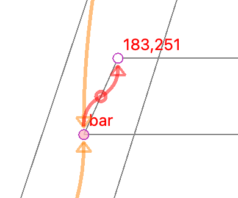
The bottom of the bar will appear sharp, being rounded to the grid,
and the top will be anti-aliased—an effect that you can see more clearly
(for both the bar and the serifs) at higher resolutions:
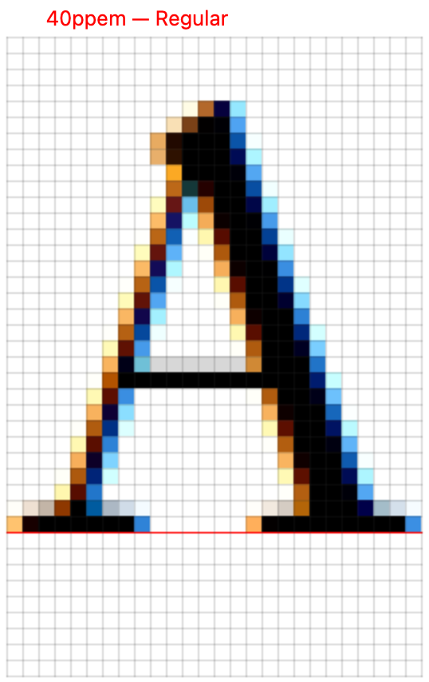
Saving your work
I’m going to hint one more glyph, but before we do that, let’s save our
work. To do so, simply type Ctrl-S or Cmd-S, as in other
applications. If you started your project by opening a TrueType font,
ygt will save your work in a separate file with the same name as the
font you opened, but with the suffix .yaml
instead of .ttf. If you
started by opening a UFO, your work will be saved in the UFO as
/data/org.ygthinter/source.yaml (if you want to change from UFO to
.ttf mode, simply copy this file out of the UFO, rename it, and edit
the first line to point to a TrueType font). When you return to the
project, open up the .yaml file, not the
.ttf; or simply open the UFO
again.
The letter i
I’ll conclude the tutorial by walking you through hinting the letter i.
The main part of the character (the “base”) is easy, given what you’ve learned so far:
- Anchor point 0 to the baseline by selecting and typing Ctrl-A.
- Add point 1 to the selection and type T to regulate the thickness of the serif.
- Select points 1 and 18 and type H to regulate the right side of the serif.
- Select point 11 and type Ctrl-A to hint the top of the minim.
- Add point 10 to the selection and type T; then right-click on the
hint and select “Minimum distance” from the context menu, unchecking it.
This will position the left side of the beak.
- Select points 9 and 10 and type T to keep the beak from disappearing
at low resolutions.
Here is the result:

All that’s left now is the dot. The complication is that on the
Optical Size axis of this variable font, the xheight varies—high at
the minimum value and low at the maximum—and the height of diacritics
(like the dot of the i) varies with it. Yet it is important to assign
a CV for diacritics, since they vary in height (for
example, an acute sits significantly lower than a macron) in a way
that might look bad at low resolutions. For the base value of this CV,
we should choose a position about halfway between the highest
diacritic in the font (the macron, at 556) and the lowest (the acute at 521).
When creating a CV, it is best, whenever possible, to base it on an existing
point rather than type a number in the “val” box.**Basing
a CV on an existing point allows ygt to determine
the values of variant CVs.
When we search through the font’s collection of diacritics for
a suitable point, we find the combining breve (uni0306), whose
lowest point, at 541, is almost exactly what we want.
Navigate to this glyph in ygt,
select the lowest on-curve point, type C,
and enter the name “diacritic-height” for the new CV:
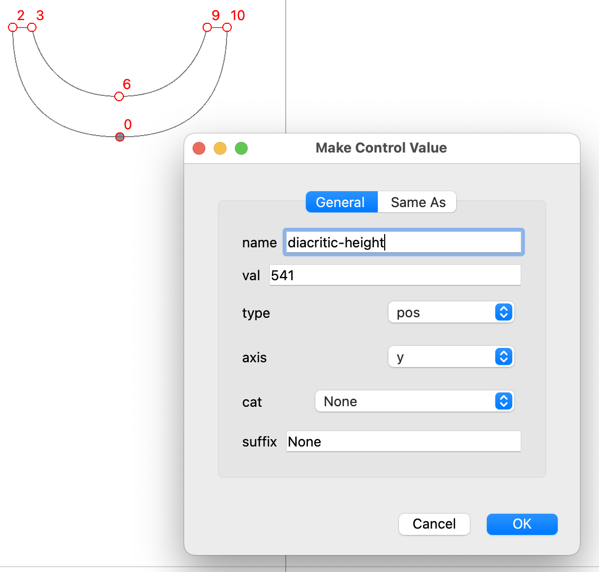
Now bring up the “Font Info” window, click over to the “Masters” tab,
and click the “Generate Variant Control Values” button. A busy icon
will appear for a few seconds. When it disappears, click over to the
“Control Values” tab, double-click “diacritic-height” in the list of
CVs, and then click over to the “Variants” pane:
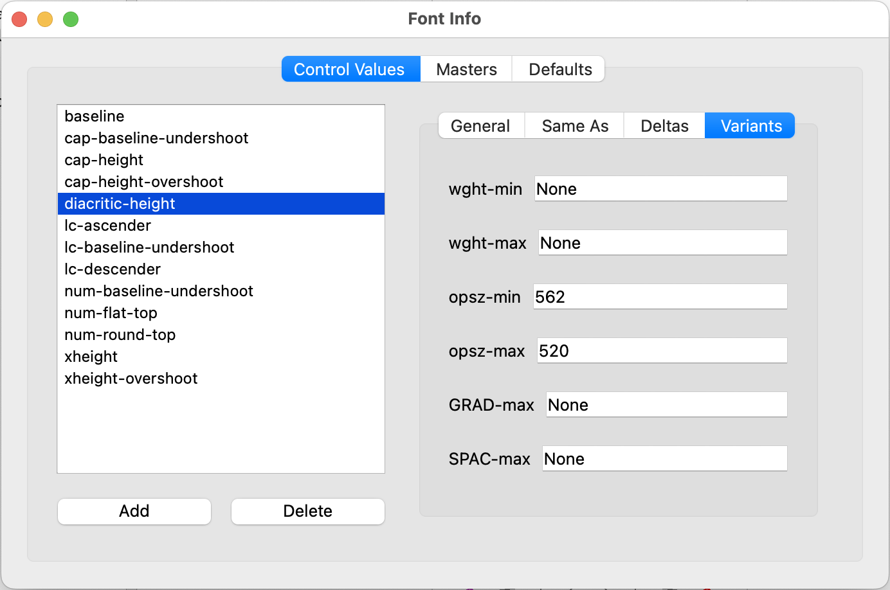
As you can see, values have been added for the “opsz-min” and “opsz-max”
masters (you can check these values in
a font editor, but I promise that ygt has gotten them right).
Masters with the value "None" will use the default value of 541.
Now return to the letter i, select the bottommost point in the dot, and
type Ctrl-A. As you can see in the code pane, an anchor hint with CV
“diacritic-height” has been added. Add the topmost point of the dot to
the selection, type T, and we’re done with the letter i!
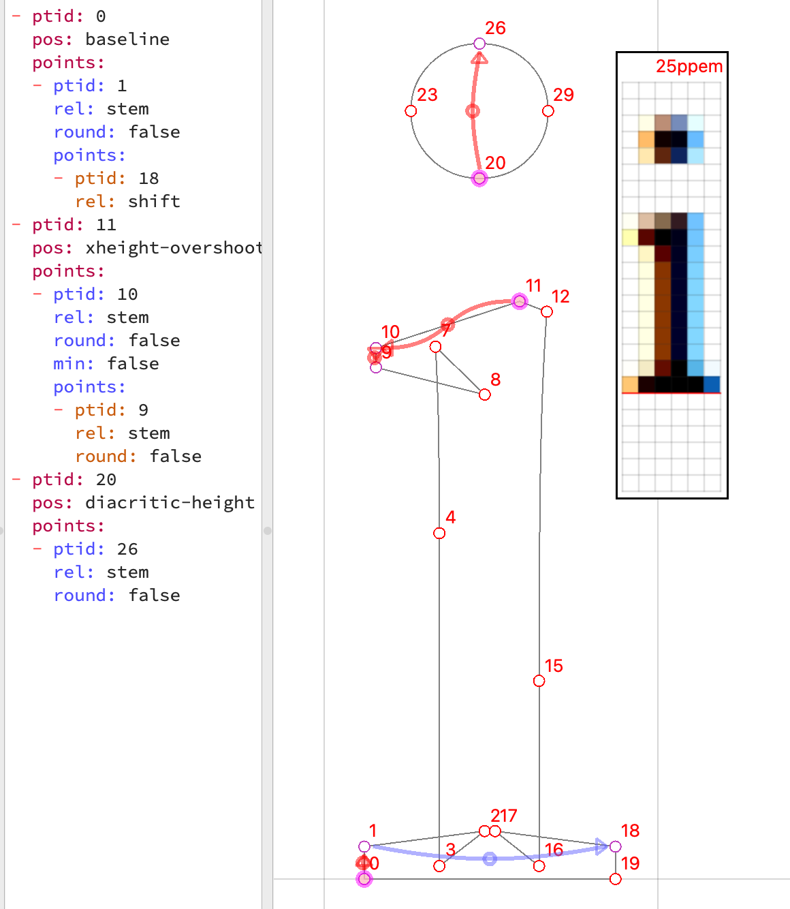
For further information, consult the document
YGT-Intro.pdf in the
ygt repository.